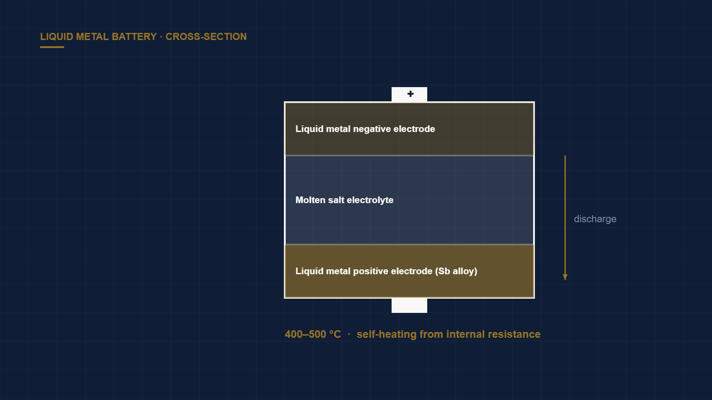

Liquid Metal Batteries for Long-Duration Grid Storage
← Back to Intelligence Hub
Long-duration energy storage (LDES) is the structural gap in a grid built on wind and solar. Lithium-ion excels in the two-to-four-hour window and becomes economically absurd beyond it — you are paying for expensive energy capacity (cells) when what the grid needs is cheap hours. Liquid metal batteries (LMBs), commercialized most visibly by Ambri out of Donald Sadoway's MIT lab, are one of the few architectures whose physics genuinely favors the 10-to-24-hour regime.
How the cell works
An LMB is elegantly simple: a liquid metal negative electrode (historically magnesium, later calcium or lithium alloys) floats on top of a molten salt electrolyte, which floats on a dense liquid metal positive electrode (antimony, or an antimony-lead alloy). The three layers self-segregate by density and immiscibility, like oil and water. On discharge, the top-metal ionizes, crosses the salt, and alloys into the bottom electrode; charging reverses it.
Because both electrodes are liquid, there is no solid microstructure to degrade. There are no dendrites, no SEI cracking, no electrode pulverization — the failure modes that age a lithium-ion cell simply do not have a foothold. Reported capacity retention is on the order of 99.97% per cycle, implying decade-plus service with negligible fade. The electrochemistry is the de-risked part of this thesis.
Where the real risk lives: balance-of-plant
The cell wants to sit at roughly 400–500 °C. That single fact relocates the entire engineering and cost challenge away from chemistry:
- Thermal self-management. At scale, the internal resistance of a densely packed pack generates enough Joule heat to keep the system molten during normal cycling — no external heater. But that only holds above a minimum utilization. A unit that sits idle cools down; re-melting is slow and parasitic. The commercial question is whether the duty cycle keeps the pack hot for free.
- Sealing and corrosion. Containing molten metal and molten halide salts for 20 years is a materials-science problem in its own right. Seal integrity and container corrosion — not amp-hours — are what determine warranty risk.
- Insulation and packaging. The economics hinge on cheap, durable insulation and high pack-level energy density, because the hot enclosure is a fixed overhead spread across the cells inside it.
The supply-chain filter
LMB economics depend on abundant, cheap electrode metals. Antimony is the quiet vulnerability here: it is a relatively thin, concentrated market (China and Russia dominate refining), and any LDES chemistry that leans on a constrained input fails the scalability test on principle. A credible team either has a secured antimony position or a roadmap to an all-abundant chemistry (e.g., calcium-antimony with heavy substitution research). Interrogate this hard — it is more likely to sink the investment than the cell performance.
The number that gates the deal
Sub-$20/kWh installed capacity cost at gigafactory scale is the threshold at which LDES out-competes gas peaking on a levelized basis for 12–24 hour discharge.
We treat that figure as a gate, not a slogan, and back-solve everything it implies: cell throughput per line, yield, materials contracts, and the insulation/enclosure cost curve. Lithium-ion for the same duration lands far higher on an energy-capacity basis, which is precisely the opening LMBs are built to exploit. A team that cannot walk you from a bill of materials to that installed number — with manufacturing yield assumptions attached — is not investable in this category, however beautiful the three-layer demo looks.
Verdict
Underwrite LMB companies as thermal-systems and supply-chain businesses that happen to store electrons, not as battery-chemistry plays. The winning teams will resemble industrial-plant operators — obsessed with enclosure cost, insulation lifetime, and antimony contracts — far more than materials-science startups. The chemistry will work; the question is whether the plant around it clears $20/kWh.